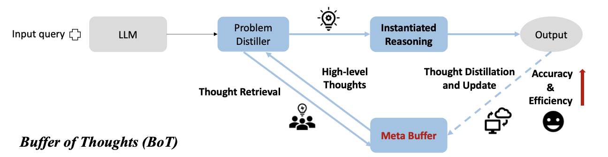

The “Buffer of Thoughts” (BoT)(Yang et al. 2024) is a framework designed to enhance the accuracy, efficiency, and robustness of Large Language Models (LLMs) in reasoning tasks.
Key Features of BoT
Long-term memory BoT introduces a Meta-Buffer, which serves as a kind of Long-term memory, persisting across different sessions. This repository stores high-level thought-templates distilled from prior problem-solving processes. These templates are retrieved and adapted for diverse tasks, eliminating the need to design reasoning structures anew.
Three Components
Problem-Distiller: Responsible for extracting key information and constraints from tasks.
Meta-Buffer: A lightweight memory storing thought-templates, which can span across various categories and domains. While six categories are mentioned in the paper (e.g., text comprehension, mathematical reasoning), the framework is not inherently restricted to this classification or number.
Buffer-Manager: Dynamically updates the Meta-Buffer by distilling new templates as tasks are solved, ensuring the memory evolves with experience.
Advantages
Improved Accuracy: By adapting templates to different tasks, BoT achieves precise and reliable reasoning.
Efficiency: Stored templates allow LLMs to bypass complex multi-query reasoning, streamlining the process.
Robustness: The generalized reasoning framework ensures consistent performance across a variety of tasks.
Notebook Objective
Demonstrates the implementation of BoT using LangGraph, highlighting Long-term memory capabilities via a BaseStore object for persistent storage and retrieval of thought-templates.
Showcases LangGraph’s support for dynamic and adaptive memory, enhancing LLMs’ reasoning capabilities within the BoT framework.

Illustration of the BoT Method. Figure taken from (Yang et al. 2024)
We start by writing down the relevant prompts for each of the three components. They are copy-pasted from the original publication.
Exported source
problem_distiller_prompt = textwrap.dedent(""" ## Problem-Distiller You are a highly professional and intelligent expert in information distillation. Your role is to extract essential information from user input queries to solve problems effectively. You also transform this extracted information into a suitable format based on the type of issue. --- ### Task Instructions 1. **Key Information**: - Extract values and key variables from the user input. - Ensure all essential information required to solve the problem is provided. - Hand over this distilled information to the respective expert for task resolution. 2. **Restrictions**: - Identify the objective of the problem. - Outline any corresponding constraints that must be adhered to. 3. **Distilled Task**: - Extend the problem based on the extracted key information and constraints. - Summarize a meta problem that addresses the user query and accommodates more input and output variations. - Incorporate the real-world scenario of the extended problem. - Define types of key variables and information constraints from the original problem to restrict variables in the extended problem. - Use the input key information from the user query as an example to solve the problem. """).strip()
The Instantiate Reasoning step is part of the Meta-Buffer and adapts thought-templates to solve specific tasks. It either instantiates a retrieved template with task-specific reasoning structures or assigns a general template for new tasks, ensuring efficient and accurate problem-solving.
Exported source
instantiate_reasoning_prompt = textwrap.dedent(""" ## Meta Reasoner You are a Meta Reasoner who is extremely knowledgeable in various fields, including Computer Science, Math, Physics, Literature, History, Chemistry, Logical Reasoning, Culture, and Language. You are also skilled in applying high-level reasoning structures for different tasks. ### Reasoning Structures: 1. **Prompt-based Structure**: - **Best For**: Common Sense Reasoning, Application Scheduling. 2. **Procedure-based Structure**: - **Best For**: Creative tasks like Creative Language Generation, and Text Comprehension. 3. **Programming-based Structure**: - **Best For**: Mathematical Reasoning, Code Programming. - Can transform real-world problems into programming problems to solve efficiently. --- ### Reasoning Instantiation **Your Task:** 1. **Contextual Analysis**: Deliberately consider the context and the problem distilled from the Problem-Distiller. Use your understanding to identify a suitable domain expert for solving the problem. 2. **Structure Selection**: Based on the distilled information, select one of the reasoning structures suitable for addressing the problem. 3. **Template Application**: If a thought-template is provided, directly follow it to instantiate the solution for the given problem. """).strip()
The following prompts outline the behavior of the Buffer-Manager and the process for creating a new template when no suitable template is found during the Meta-Buffer’s template retrieval step. This process, known as Template Distillation, involves two key steps: first, summarizing the task using the distilled task description and the derived solution; second, leveraging this summary to perform a contextual search for in-task and cross-task examples, which are then used as few-shot examples to generate the new template.
Exported source
# prompt to infer the core task summary. That one is needed for contextual search for relevant in-task and cross-task templates as few-shot examples for generating thecore_task_summarization_prompt = textwrap.dedent(""" ## Prompt for Template Distillation: **User Input**: **Problem Description**: {distilled_task} **Solution Steps or Code**: {solution_steps} 1. **Core task summarization**: Identify and describe the basic type and core challenges of the problem, such as classifying it as a mathematical problem (e.g., solving a quadratic equation), a data structure problem (e.g., array sorting), an algorithm problem (e.g., search algorithms), etc. And analyze the most efficient way to solve the problem. """).strip()template_distiller_prompt = textwrap.dedent(""" ## Prompt for Template Distillation (continued) 2. **Solution Steps Description**: Outline the general solution steps, including how to define the problem, determine variables, list key equations or constraints, choose appropriate solving strategies and methods, and how to verify the correctness of the results. 3. **General Answer Template**: Based on the above analysis, propose a template or approach that can be widely applied to this type of problem, including possible variables, functions, class definitions, etc. If it is a programming problem, provide a set of base classes and interfaces that can be used to construct solutions to specific problems. Please ensure that your response is highly concise and structured, so that specific solutions can be transformed into generalizable methods. [Optional] Here are some exemplars of the thought-template: <in-task-examples>{in_task_examples} <in-task-examples> <cross-task-examples>{cross_task_examples} <cross-task-examples> """).strip()
Some prompts, provided to the Trustcall Executors defined in the next section, are used to extract structured output from the plain text responses of the LLM.
Exported source
structure_prompt = textwrap.dedent(""" Extract the items of the 'ThoughtTemplate' Pydantic class from the previous conversation. <convo>{conversation} </convo> """).strip()distilled_task_extractor_prompt = textwrap.dedent(""" Extract the content of the 'Extended Problem' subsection within the 'Distilled Task' section from the entire distilled problem description. <distilled-problem>{distilled_problem} <distilled-problem> """).strip()
Templates
A Pydantic class is used to digest and extract Thought Templates in the required format. It consists of three sections: a “Task Description” which provides a brief overview of the task; a “Solution Description” which outlines a high-level approach to solving the task; and finally, the “Thought Template” itself, which offers a step-by-step guide for solving the problem.
class ThoughtTemplate(BaseModel):"""Defining the three fields of the Thought Template""" task_description: str= Field(description="Task Description") solution_description: str= Field(description="Solution Description") thought_template: str= Field(description="Thought Template")
Runnables
The Lang-Chain Runnables encapsulating the main logic of the subsequently defined nodes of the graph.
Exported source
# Setup Large Language Model (LLM)LLM = ChatOpenAI( model_name="gpt-4o-mini", openai_api_key=os.getenv("OPENAI_API_KEY"), temperature=0.0,)
Exported source
# Define Trustcall instance for sane extraction of the Thought Template items: Task Description, Solution Description, Thought Templatestructure_template_text = create_extractor( LLM, tools=[ThoughtTemplate], tool_choice="ThoughtTemplate")# Extract the distilled task from the distilled problem. Required for the semantic search in the Template retrieval step.distilled_task_extractor = ( PromptTemplate.from_template( template=distilled_task_extractor_prompt) | LLM)
Long-term memory
All Thought Templates are stored in a Long-term memory to ensure their availability across sessions. The Long-term memory supports semantic search on the Task Description of each Thought Template, which plays a crucial role in two steps: first, during template retrieval in the Meta-Buffer, where a relevant template is identified for the problem; and second, during Template Distillation by the Buffer-Manager, where it is used to retrieve relevant in-task and cross-task few-shot examples for generating a new template.
Exported source
# Create store with semantic search enabledtemplate_store = InMemoryStore( index={"embed": init_embeddings(model="openai:text-embedding-3-small"),"dims": 1536,# semantic search is only conducted on the task_description field of a Thought Template"fields": ["task_description"], })
LangChainBetaWarning: The function `init_embeddings` is in beta. It is actively being worked on, so the API may change.
"embed": init_embeddings(model="openai:text-embedding-3-small"),
Optionally, one can populate the Thought Template storage with predefined templates like the six ones listed in the appendix of (Yang et al. 2024) or one can also start with a blank template store.
Exported source
user_id ="user_123"long_term_memory ="thought_templates"namespace_for_memory = (user_id, long_term_memory)populate =True# Optional, we populate the memory with some templatesif populate:# Dynamically determine the notebook's directory notebook_dir = Path(__file__).parent if"__file__"inglobals() else Path.cwd()# Define the path relative to the notebook's directory template_path = notebook_dir /"data"/ long_term_memory# Ensure the directory exists before iteratingif populate and template_path.exists():for md_fl in template_path.iterdir(): template_name, _ = md_fl.name.split(".")withopen(md_fl) as fl: template_store.put( namespace_for_memory, template_name, markdown_to_json( fl.read()) )else:print(f"Template path '{template_path}' does not exist.")
Template path '/Users/oliverpfante/Documents/agentic/data/thought_templates' does not exist.
States
The state of the LangGraph agent is defined by inheriting from MessageState, the default state of LangGraph that stores the message history. Additionally, two more attributes are added, whose values are manipulated during the BoT agent’s actions.
class BoTState(MessagesState):# thought template possibly extracted from the Long-term memory template_text: Optional[str]# part of the distilled problem description. Required for similarity computations distilled_task: str
Nodes
Nodes of the LangGraph agent which update the state. Each Node maps onto each step of the BoT agent.
*Distills task information from the forwarded problem description using a Language Model (LLM).
This function represents the problem distillation step in the Buffer of Thoughts (BoT) framework. It processes the most recent message, which is the original problem description, in the agent’s state to extract a distilled representation of the task and updates the state with the distilled task.*
Type
Details
state
BoTState
The current state of the agent, which contains the message history and other relevant attributes.
Returns
dict
A dictionary with the following keys: - “distilled_task” : str The distilled task description extracted from the latest message which is the problem description. - “messages” : str The distilled problem description which contains the distilled task description but also a key information and problem constraints.
Exported source
def problem_distiller(state: BoTState) ->dict:""" Distills task information from the forwarded problem description using a Language Model (LLM). This function represents the problem distillation step in the Buffer of Thoughts (BoT) framework. It processes the most recent message, which is the original problem description, in the agent's state to extract a distilled representation of the task and updates the state with the distilled task. Parameters ---------- state : BoTState The current state of the agent, which contains the message history and other relevant attributes. Returns ------- dict A dictionary with the following keys: - "distilled_task" : str The distilled task description extracted from the latest message which is the problem description. - "messages" : str The distilled problem description which contains the distilled task description but also a key information and problem constraints. """# Invoke the LLM with the Problem-Distiller prompt and the latest message distilled_task = LLM.invoke( [problem_distiller_prompt, state["messages"][-1]])# Extract the distilled task description from the LLM responsereturn {"distilled_task": distilled_task_extractor.invoke( distilled_task.content ).content,"messages": distilled_task, # Update state with the distilled task message }
*Retrieves the most relevant thought template for a given task using semantic search.
This function conducts a semantic search between the distilled task and the task descriptions of thought templates stored in the Long-term memory. It selects the template with the highest similarity score if it exceeds a user-defined threshold. If no suitable template is found, the template field is left blank.*
Type
Details
state
BoTState
The current state of the agent, containing the distilled task and other relevant information.
config
RunnableConfig
Configuration object containing user-defined parameters, including the retrieval threshold.
store
BaseStore
The Long-term memory store where thought templates are stored and queried.
Returns
dict
A dictionary with the following key: - “template_text” : str or None The text of the retrieved thought template if it satisfies the similarity threshold, otherwise None.
Exported source
def template_retrieval( state: BoTState, config: RunnableConfig, store: BaseStore) ->dict:""" Retrieves the most relevant thought template for a given task using semantic search. This function conducts a semantic search between the distilled task and the task descriptions of thought templates stored in the Long-term memory. It selects the template with the highest similarity score if it exceeds a user-defined threshold. If no suitable template is found, the template field is left blank. Parameters ---------- state : BoTState The current state of the agent, containing the distilled task and other relevant information. config : RunnableConfig Configuration object containing user-defined parameters, including the retrieval threshold. store : BaseStore The Long-term memory store where thought templates are stored and queried. Returns ------- dict A dictionary with the following key: - "template_text" : str or None The text of the retrieved thought template if it satisfies the similarity threshold, otherwise None. """# Perform semantic search between the distilled task and templates in Long-term memory items = store.search(namespace_for_memory, query=state["distilled_task"], limit=1) template = items.pop() if items elseNone# Check if the retrieved template exceeds the similarity thresholdif template and template.score > config["configurable"]["retrieval_threshold"]: template_text = json_to_markdown( { key: valfor key, val in template.value.items()if key !="task_description" } )return {"template_text": template_text}else:return {"template_text": None}
*Executes the main solution step for the BoT agent by attempting to solve the problem.
This function represents the core reasoning process in the Buffer of Thoughts (BoT) framework. It uses either a retrieved thought template to guide the solution or, if no template is available, applies a general solution approach as defined in the prompt.*
Type
Details
state
BoTState
The current state of the agent, containing the task description, thought template (if retrieved), and other relevant information.
Returns
dict
A dictionary with the following key: - “messages” : str The result of the reasoning step, either guided by the thought template or generated using a general approach.
Exported source
def instantiate_reasoning(state: BoTState) ->dict:""" Executes the main solution step for the BoT agent by attempting to solve the problem. This function represents the core reasoning process in the Buffer of Thoughts (BoT) framework. It uses either a retrieved thought template to guide the solution or, if no template is available, applies a general solution approach as defined in the prompt. Parameters ---------- state : BoTState The current state of the agent, containing the task description, thought template (if retrieved), and other relevant information. Returns ------- dict A dictionary with the following key: - "messages" : str The result of the reasoning step, either guided by the thought template or generated using a general approach. """if state["template_text"]:# Reasoning step guided by the retrieved thought templatereturn {"messages": LLM.invoke( [ state["messages"][-1], ("user", instantiate_reasoning_prompt+f"\n\n<thought-template>\n{state['template_text']}\n<thought-template>", ), ] ) }else:# Reasoning step using a general solution approachreturn {"messages": LLM.invoke( [state["messages"][-1], ("user", instantiate_reasoning_prompt)] ) }
*Distills a new thought template when no suitable template is found in the Long-term memory.
This function is used when the Buffer of Thoughts (BoT) agent fails to retrieve a proper thought template. It distills a new template by analyzing the task description and the derived solution. Relevant in-task and cross-task examples (i.e., similar and diverse thought templates) are retrieved from the Long-term memory to guide the derivation of a new template.*
Type
Details
state
BoTState
The current state of the agent, containing the distilled task, derived solution, and other relevant details.
config
RunnableConfig
Configuration object containing user-defined parameters, including thresholds and limits for in-task and cross-task template retrieval.
store
BaseStore
The Long-term memory store where thought templates are stored and queried.
Returns
dict
A dictionary containing: - “messages” : str The distilled thought template generated by the BoT agent, guided by the retrieved in-task and cross-task examples.
Exported source
def template_distillation( state: BoTState, config: RunnableConfig, store: BaseStore) ->dict:""" Distills a new thought template when no suitable template is found in the Long-term memory. This function is used when the Buffer of Thoughts (BoT) agent fails to retrieve a proper thought template. It distills a new template by analyzing the task description and the derived solution. Relevant in-task and cross-task examples (i.e., similar and diverse thought templates) are retrieved from the Long-term memory to guide the derivation of a new template. Parameters ---------- state : BoTState The current state of the agent, containing the distilled task, derived solution, and other relevant details. config : RunnableConfig Configuration object containing user-defined parameters, including thresholds and limits for in-task and cross-task template retrieval. store : BaseStore The Long-term memory store where thought templates are stored and queried. Returns ------- dict A dictionary containing: - "messages" : str The distilled thought template generated by the BoT agent, guided by the retrieved in-task and cross-task examples. """# Summarize the core task and solution steps core_task_summarization_msg = core_task_summarization_prompt.format( distilled_task=state["distilled_task"], solution_steps=state["messages"][-1].content, )# Generate task summary using LLM task_summary = LLM.invoke(core_task_summarization_msg)# Search for relevant thought templates in the Long-term memory items = store.search( namespace_for_memory, query=task_summary.content, limit=config["configurable"]["limit"], )# Separate templates into in-task and cross-task examples based on their similarity scores in_task_l = [ templatefor template in itemsif template.score > config["configurable"]["in_task_threshold"] ] in_task = in_task_l.pop(0) if in_task_l elseNone cross_task_l = [ templatefor template in itemsif template.score <= config["configurable"]["in_task_threshold"] ] cross_task = cross_task_l.pop(0) if cross_task_l elseNone# Use in-task and cross-task examples to guide the generation of a new thought templatereturn {"messages": LLM.invoke( [ ("user", core_task_summarization_msg), # Task summarization task_summary, # Task summary message ("user", template_distiller_prompt.format( task_summary=task_summary, in_task_examples=json_to_markdown( in_task.value if in_task else {} ), cross_task_examples=json_to_markdown( cross_task.value if cross_task else {} ), ), ), ] ) }
*Structures the distilled template into predefined sections and stores it in the Long-term memory.
This function processes the distilled template by organizing it into three sections: ‘Task Description’, ‘Solution Description’, and ‘Thought Template’, as defined by the Pydantic class. The structured template is then stored in the Long-term memory in JSON format.*
Type
Details
state
BoTState
The current state of the agent, containing the distilled template and related data.
config
RunnableConfig
Configuration object with user-defined parameters and metadata for storing the structured template.
store
BaseStore
The Long-term memory store where the structured template is saved in JSON format.
Returns
dict
A dictionary containing: - “messages” : str A message confirming the successful update of the Meta-Buffer.
Exported source
def dynamic_meta_buffer_update( state: BoTState, config: RunnableConfig, store: BaseStore) ->dict:""" Structures the distilled template into predefined sections and stores it in the Long-term memory. This function processes the distilled template by organizing it into three sections: 'Task Description', 'Solution Description', and 'Thought Template', as defined by the Pydantic class. The structured template is then stored in the Long-term memory in JSON format. Parameters ---------- state : BoTState The current state of the agent, containing the distilled template and related data. config : RunnableConfig Configuration object with user-defined parameters and metadata for storing the structured template. store : BaseStore The Long-term memory store where the structured template is saved in JSON format. Returns ------- dict A dictionary containing: - "messages" : str A message confirming the successful update of the Meta-Buffer. """# Structure the distilled template into defined sections using the structure prompt result = structure_template_text.invoke( {"messages": [ structure_prompt.format( conversation=state["messages"][-1].content) ] } )# Extract the structured response and associated metadata r, rmeta = result["responses"].pop(), result["response_metadata"].pop()# Store the structured template in the Long-term memory store.put( (user_id, long_term_memory), # Memory namespace and user context rmeta.get("json_doc_id", str(uuid.uuid4())), # Unique document ID r.model_dump(mode="json"), # Save structured template as JSON )# Return confirmation of Meta-Buffer updatereturn {"messages": "Meta-Buffer updated"}
Conditional Edges
In case a proper Thought Template was found during the Thought Template Retrieval step, we skip the distillation of a new template.
The graph representing the BoT agent consists of two sub-graphs: the Meta-Buffer and the Buffer-Manager. The Meta-Buffer handles the Template Retrieval and Reasoning Instantiation steps, while the Buffer-Manager generates a new Thought Template and updates the Long-term memory if the Template Retrieval step fails to find a matching template for the problem.
We run the agent for two different problems. The first one is sampled from the Game of 24(Yao et al. 2023). The second one is a word sorting problem which itself is part of the BIG-Bench Hard (BBH) dataset.
data = {"24-game": [{'numbers': [1, 5, 5, 12],'solutions': ['(5/5+1)×12'],'solvable': True,'amt': 6.22,'solved_rate': 0.901,'mean_time': 6.42,'std_time': 2.38}]}data["word_sorting"] = [{'input': 'Sort the following words alphabetically: List: episode molybdenum schedule hen sparkman calabash marietta pedantic pounce vinaigrette berra','target': 'berra calabash episode hen marietta molybdenum pedantic pounce schedule sparkman vinaigrette'}]data
{'24-game': [{'numbers': [1, 5, 5, 12],
'solutions': ['(5/5+1)×12'],
'solvable': True,
'amt': 6.22,
'solved_rate': 0.901,
'mean_time': 6.42,
'std_time': 2.38}],
'word_sorting': [{'input': 'Sort the following words alphabetically: List: episode molybdenum schedule hen sparkman calabash marietta pedantic pounce vinaigrette berra',
'target': 'berra calabash episode hen marietta molybdenum pedantic pounce schedule sparkman vinaigrette'}]}
prompts = {}prompts["24-game"] = [f""" Manipulate four numbers with basic arithmetic operations to reach 24. <numbers>{rec['numbers']} <numbers> """for rec in data["24-game"]]prompts["word_sorting"] = [rec["input"] for rec in data["word_sorting"]]prompts
{'24-game': ['\n Manipulate four numbers with basic arithmetic operations to reach 24.\n\n <numbers>\n [1, 5, 5, 12]\n <numbers>\n '],
'word_sorting': ['Sort the following words alphabetically: List: episode molybdenum schedule hen sparkman calabash marietta pedantic pounce vinaigrette berra']}
config = RunnableConfig( max_concurrency=5, configurable={# ensuring a fresh run of the agent each time it is kicked off"thread_id": "24-game","retrieval_threshold": 0.6,"in_task_threshold": 0.8,"limit": 100, },)# Run the agent by streaming the graphfor event in bot_agent.stream(input={"messages": prompts["24-game"][0]}, config=config, stream_mode="values"):if event["messages"]: event["messages"][-1].pretty_print()
For the Game of 24 problem, the agent retrieves the Coding Thought Template and uses it to derive a Python program as a generic solution (caveat: the solution is printed in Polish notation).
state = bot_agent.get_state(config)# The solution description is the last AI-Messagesolution_description = [ mess for mess in state.values["messages"] ifisinstance(mess, AIMessage)].pop()code = extract_python_blocks(solution_description.content).pop()exec(code)
5 / 5 + 1 * 12
config["configurable"]["thread_id"] ="word_sorting"# Run the agent by streaming the graphfor event in bot_agent.stream(input={"messages": prompts["word_sorting"][0]}, config=config, stream_mode="values"):if event["messages"]: event["messages"][-1].pretty_print()
================================ Human Message =================================
Sort the following words alphabetically: List: episode molybdenum schedule hen sparkman calabash marietta pedantic pounce vinaigrette berra
================================== Ai Message ==================================
### Key Information Extracted:
- **Objective**: Sort a list of words alphabetically.
- **Input List**:
- episode
- molybdenum
- schedule
- hen
- sparkman
- calabash
- marietta
- pedantic
- pounce
- vinaigrette
- berra
### Constraints:
- The sorting must be done in alphabetical order.
### Distilled Task:
- **Extended Problem**: Create a function that can sort any given list of words alphabetically, accommodating variations in input such as different lengths of lists and different types of characters (e.g., uppercase, lowercase).
- **Real-World Scenario**: This function could be used in applications such as organizing a list of names, titles, or any textual data where alphabetical order is required for better readability and accessibility.
### Key Variables and Information Constraints:
- **Key Variables**:
- List of words (strings)
- **Information Constraints**:
- The list can contain any number of words.
- Words may include uppercase and lowercase letters.
- The sorting should be case-insensitive.
### Example Solution:
Given the input list:
- episode
- molybdenum
- schedule
- hen
- sparkman
- calabash
- marietta
- pedantic
- pounce
- vinaigrette
- berra
The sorted output would be:
1. berra
2. calabash
3. episode
4. hen
5. marietta
6. molybdenum
7. pedantic
8. pounce
9. schedule
10. sparkman
11. vinaigrette
================================== Ai Message ==================================
### 1. Contextual Analysis
The problem at hand involves sorting a list of words alphabetically. This task falls under the domain of computer science, specifically in the area of data manipulation and algorithms. A suitable domain expert for this problem would be a software developer or a data scientist, as they possess the skills necessary to implement sorting algorithms and understand the nuances of string manipulation.
### 2. Structure Selection
Given the nature of the problem, which involves sorting a list of strings, the **Programming-based Structure** is the most appropriate choice. This structure allows for the transformation of the real-world problem (sorting words) into a programming problem that can be solved efficiently using algorithms.
### 3. Template Application
Using the Programming-based Structure, we can outline a solution to the problem as follows:
#### Problem Statement
Sort a list of words alphabetically, ensuring that the sorting is case-insensitive.
#### Input
A list of words:
```python
words = [
"episode",
"molybdenum",
"schedule",
"hen",
"sparkman",
"calabash",
"marietta",
"pedantic",
"pounce",
"vinaigrette",
"berra"
]
```
#### Steps to Solve
1. **Define the List**: Start with the given list of words.
2. **Sort the List**: Use a sorting function that handles case insensitivity.
3. **Output the Sorted List**: Print or return the sorted list.
#### Implementation
Here is a Python implementation of the solution:
```python
def sort_words_alphabetically(words):
# Sort the list of words in a case-insensitive manner
sorted_words = sorted(words, key=lambda word: word.lower())
return sorted_words
# Input list of words
words = [
"episode",
"molybdenum",
"schedule",
"hen",
"sparkman",
"calabash",
"marietta",
"pedantic",
"pounce",
"vinaigrette",
"berra"
]
# Get the sorted list
sorted_list = sort_words_alphabetically(words)
# Output the sorted list
print(sorted_list)
```
#### Expected Output
When the above code is executed, the output will be:
```
['berra', 'calabash', 'episode', 'hen', 'marietta', 'molybdenum', 'pedantic', 'pounce', 'schedule', 'sparkman', 'vinaigrette']
```
### Conclusion
This structured approach effectively addresses the problem of sorting a list of words alphabetically, demonstrating the application of programming principles to solve a real-world task.
================================ Human Message =================================
Meta-Buffer updated
The BoT-Agent generates a new Thought-Template for the Word Sorting problem and updates the Long-term memory (aka Meta-Buffer).
Sort a list of words alphabetically in a case-insensitive manner.
Solution Description
Utilize Python’s built-in sorted() function with a lambda function as the sorting key to handle case insensitivity.
Thought Template
Define the Problem: Clearly articulate the task of sorting a list of words alphabetically, ensuring case insensitivity.
Determine Variables:
Input: A list of words (strings).
Output: A sorted list of words (strings).
Key Variables: words (input list), sorted_words (output list).
List Key Equations or Constraints:
Sorting must be case-insensitive: sorted(words, key=lambda word: word.lower()).
The input list can vary in length and character types.
Choose Appropriate Solving Strategies and Methods:
Utilize Python’s built-in sorted() function for efficiency.
Implement a lambda function as the sorting key to handle case insensitivity.
Verify the Correctness of the Results:
Test the function with various input cases, including mixed-case words and different lengths.
Compare the output against expected sorted lists to ensure accuracy.
References
Yang, Ling, Zhaochen Yu, Tianjun Zhang, Shiyi Cao, Minkai Xu, Wentao Zhang, Joseph E. Gonzalez, and Bin Cui. 2024. “Buffer of Thoughts: Thought-Augmented Reasoning with Large Language Models.”https://arxiv.org/abs/2406.04271.
Yao, Shunyu, Dian Yu, Jeffrey Zhao, Izhak Shafran, Thomas L. Griffiths, Yuan Cao, and Karthik Narasimhan. 2023. “Tree of Thoughts: Deliberate Problem Solving with Large Language Models.”https://arxiv.org/abs/2305.10601.